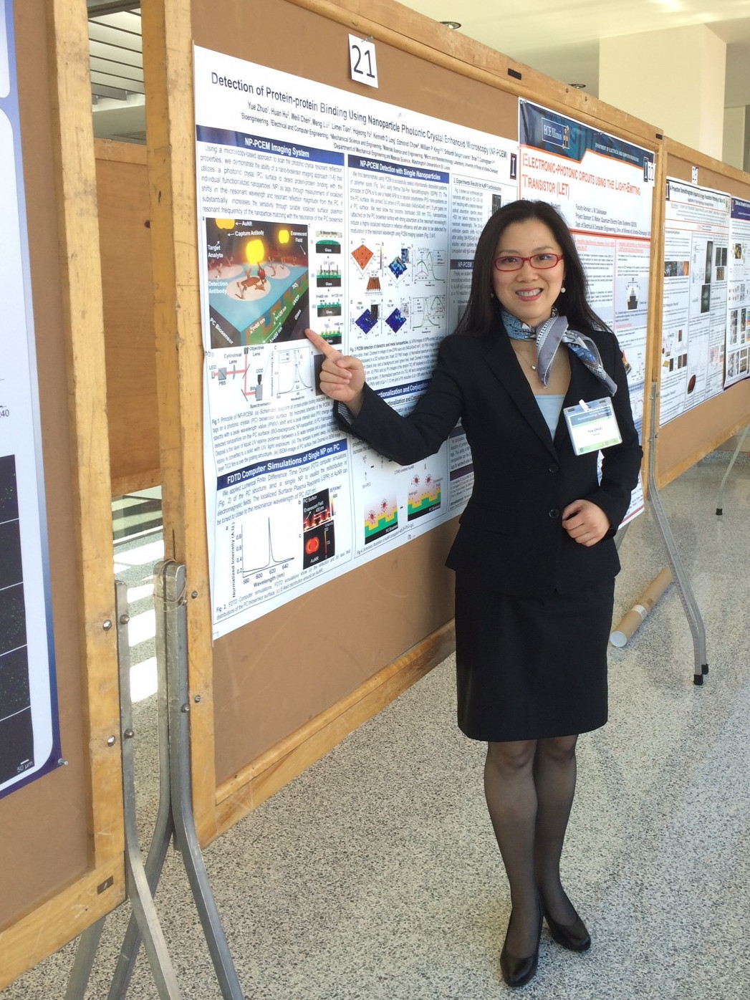
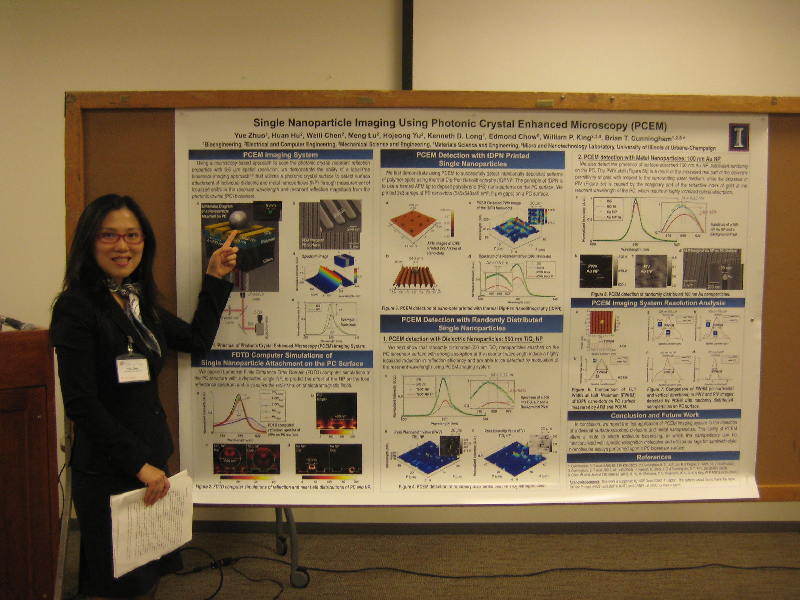

News
2019
- Checking In with Photomedicine
- Profile in Optics & Photonics News
Congrats to Nano Sensor Group alumni Yue Zhuo for being profiled in Optics & Photonics News! Check out the story: https://t.co/zmeFa0RVRs
— Brian Cunningham (@brian_bcunning) April 3, 2019
2018
- OSA Stories
- Inaugural T.F. Deutch Fellowship
Congratulations to Yue Zhuo for being selected as the inaugural T.F. Deutch Fellow in Biomedical Optics at Massachusetts General Hospital: https://t.co/EIQkxN2OrJ
— Brian Cunningham (@brian_bcunning) October 26, 2018
Best wishes to Yue as she moved to Boston for the next exciting stage of her career!
- Thomas F. Deutsch Fellowship Winner Yue Zhuo
- Postdoc Yue Zhuo Receives Inaugural Thomas F. Deutsch Fellowship in Biomedical Optics (FIO + LS 2018, Carnegie Institution of Science, Washington, D.C.)
- Zhuo to Receive Inaugural Fellowship in Biomedical Optics at MGH
- Alumna Zhuo receives prestigious fellowship in biomedical optics
- Inaugural Thomas F. Deutsch Fellow
The #OSAFoundation & The Wellman Center for Photomedicine (WCP) at @MassGeneralNews are pleased to announce Yue Zhuo, Univ. of Illinois at Urbana-Champaign, @Illinois_Alma the inaugural Thomas F. Deutsch Fellow in #Biomedical #Optics. #Imaging #FIO18 Awards pic.twitter.com/Lv6gw7oCvu
— The Optical Society (@OpticalSociety) September 17, 2018
- Photonic Resonator Outcoupler Microscopy: New Tool for Live Imaging of Cell Focal Adhesions
- PROM microscopy analyses cellular focal adhesion dynamics
- Researchers Develop Microscopy Technique to Analyze Cellular Focal Adhesion Dynamics
New paper in Light Science & Applications! Photonic resonator outcoupler microscopy for live imaging of cell focal adhesions: https://t.co/rsBGevga9i
— Brian Cunningham (@brian_bcunning) June 8, 2018
By Maeve Reilly. Published on June 01, 2018
Focal adhesions are large specialized proteins that are located in the area where a cell membrane meets the extracellular matrix (ECM), a collection of molecules surrounding the cells that provide support and regulate micromechanical signals to the cells. Examining focal adhesions is one of the key elements to understanding how a cell proliferates, differentiates, and migrates—which can help in the treatment of diseases like cancer. Researchers at the Beckman Institute for Advanced Science and Technology and the Micro and Nanotechnology Laboratory at the University of Illinois have developed a new form of microscopy that allows them to observe the formation and evolution of cell membrane focal adhesions. Their paper in Light: Science & Applications, “Quantitative Analysis of Focal Adhesion Dynamics Using Photonic Resonator Outcoupler Microscopy (PROM),” details how the new live cell imaging technique can observe the formation and evolution of cell membrane focal adhesions.
- Novel microscopy technique developed to analyze cellular focal adhesion dynamics
- Cellular Focal Adhesion Dynamics Analyzed: Novel Microscopy Technique
2017
- Alumna Zhuo Receives Postdoctoral Scholar Award
- Alumna Zhuo earns scholar award for PCEM-related paper
- 2017 M&M Postdoctoral Students Awards & Scholarships
- Beckman Institute researcher awarded Postdoctoral Scholar Award
- Enter the matrix
- Crystal Sensor Reveals Essential Cell Behavior
- Researchers explore essential cell behavior with crystal sensor
2016
- Illinois Researchers Unveil Powerful New Microscope
- Enhanced label-free microscope tracks cell adhesion in high resolution
- Cunningham's label-free microscopy enables high-resolution imaging of cell interactions
- Novel label-free microscope enables dynamic, high-resolution imaging of cell interactions
- Photonic crystal enhanced microscope sheds light on wound healing and cancer metastasis
- Story label-free microscopy enables dynamic, high-resolution imaging of cellular interactions
- Yue Zhuo wins CNST Nanotechnology Workshop 2016 Poster Winners

- 2016 Beckman Institute Postdoctoral Fellows Announced
2015
- Yue Zhuo wins 1st place Poster Award in Nanotechnology Workshop
- Yue Zhuo wins CNST Nanotechnology Workshop 2015 Poster Winners
2014
- OSA Pusblishing: Detection of Single Nanoparticles Using Photonic Crystal Enhanced Microscopy
- OSAPublishing (Presentation Video)
- MNTL workshop: Detection of Protein-protein binding Using Photonic Crystal Enhanced Microscopy

2013
- BIOE workshop: Detection of Single Nanoparticles Using Photonic Crystal Enhanced Microscopy
